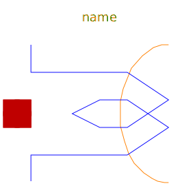
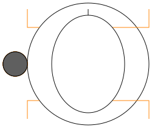
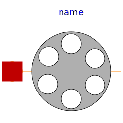
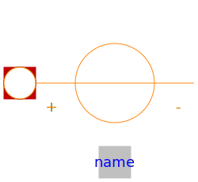

Components specially for electric machines
| Name | Description |
|---|---|
| SinglePhaseWinding | Symmetric winding model coupling electrical and magnetic domain |
|  SymmetricMultiPhaseWinding | Symmetric winding model coupling electrical and magnetic domain |
|  RotorSaliencyAirGap | Air gap model with rotor saliency |
|  SymmetricMultiPhaseCageWinding | Symmetrical rotor cage |
|
|
Rotor cage with saliency in d- and q-axis |
|  PermanentMagnet |